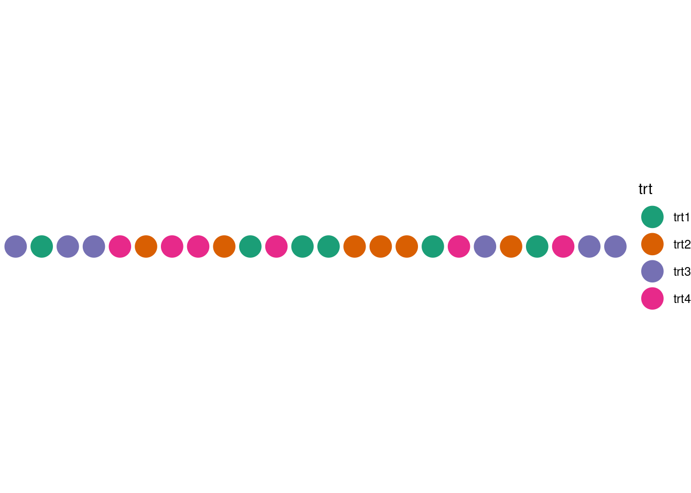
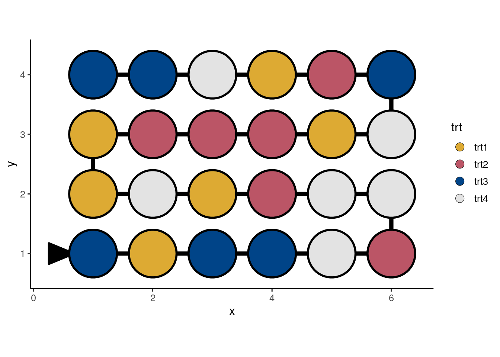

9 Visualise
Visualisation of the experimental design is helpful for diagnostics (as outlined in Chapter 4), however, it also serves well for communication purposes. There are broadly four types of purposes in visualising experimental design as outlined in Table 9.1. Given the purposes in Table 9.1, an ideal visualisation system for experimental designs would be easy, quick and can be customised to make a polished, publication-ready visualisation – just like the ggplot2 system discussed in Chapter 8. On top of the previous ideal requirements, it helps to leverage existing visualisation systems so users don’t have to learn a new “lingo” just to customise the visualisation of experimental designs. The deggust R-package was made with these requirements in mind – several of its features are outlined below that make small but considerate choices for viewers.
| # | Purpose | Primary audience | Output requirement |
|---|---|---|---|
| 1 | Checking the experimental structure | Domain experts | Quick and easy |
| 2 | Diagnosis of experimental design | Statisticians | Informative |
| 3 | Implementing the experimental design | Technicians | Detailed diagram |
| 4 | Publications in journals, reports and other mediums | Public | Polished |
9.1 Rectangular display
Suppose we have an experiment with 6 treatments with 4 replicates each and these treatments are randomly assigned to 24 units as shown in ?tbl-crd. Now consider visualising the design layout of this experiment using some graphic system with the goal of checking the design layout and assessing the randomisation of the treatments to units.
?(caption)
If say, you use a system based on the grammar of graphics, then the columns in the design table must be mapped to a particular plot aesthetics. Figure 9.1 shows a plot with a series of circles where each circle represents a unit, the unit column mapped to the x-axis, the trt column mapped to the color of the circle, the y-axis value is held at a constant. This display, however, is horizontally long, which is not optimal for the typical rectangular display. A display that fits more nicely into a rectangular region, while preserving the ability to understand the order of units, may be more desirable,
A display like Figure 9.2, which shows the design layout in ?tbl-crd with units ordered in a snake-like fashion, snugly fits all units in a rectangular display with the order traced by the lines connecting the circles. This display however requires computation of new positions for the units, which adds an extra layer of friction for fast visualisation of the experimental design. The deggust package automates these types of computation so the user can quickly visualise the experimental design in a manner made for human consumption.
